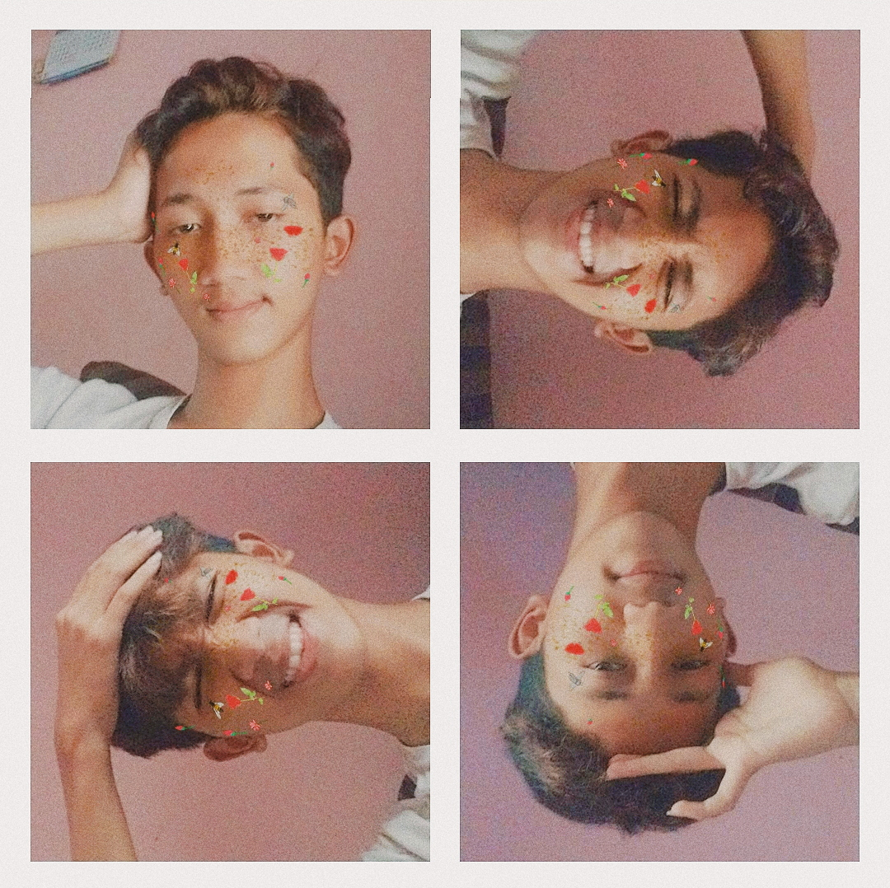

Saya Rifki Nauval Lisana Mahasiswa Universitas pendidikan indonesia jurusan sistem informasi kelautan kampus daerah serang
saya lahir di bandung dan besar di bekasi ,saya memiliki banyak hobi salah satunya memasak dan mendengarkan musik
sebelum saya diterima di jurusan sistem informasi kelautan saya berminat memasuki jurusan pendidikan tataboga upi
Biodata Pribadi
Nama : Rifki Nauval Lisana
Alamat : perum mutiara gading timur 2 blok m 15/17
Jenis Kelamin : Laki Laki
Agama : Islam
Kewarganegaraan : Indonesia
Tempat, Tanggal Lahir : Bandung, 07 April 2002
Email : rifkinaufal74@gmail.com
Riwayat Pendidikan
SD : SD Abdi Negara (2007-2013)
SMP : SMPN 36 Kota Bekasi (2013-2017)
SMA : SMAN 6 Tambun Selatan (2017-2020)
S1 : Univiersitas Pendidikan Indonesia (2020-Sekarang)
Riwayat Organisasi
Anggota Ekstrakulikuler Pramuka sd abdi negara
Anggota Ekstrakulikuler Pramuka smpn 36 kota bekasi
Bendahara Ekstrakulikuler Pramuka sman 6 tambun selatan